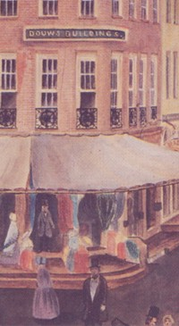

Douw
by
Stefan Bielinski
The story of the Douw family in early Albany begins with the arrival of Volckert Janse in New Netherland in 1638. By the end of the seventeenth century, his descendants had become well established in Albany and surrounding Rensselaerswyck where his widow and several sons had established separate residences by 1697. Although his parents remained in Holland, Volckert Janse's siblings also settled in New York and in Schenectady.
During the eighteenth century, several family members were prominent skippers including Petrus Douw who built "Wolvenhook" and served in the provincial Assembly. In 1742, three Douw-named households in Albany and three more on the Manor were listed on a census of Albany freeholders.
 Following his marriage to the daughter of Mayor Johannes De Peyster in 1742, the family achieved new political ascendancy when Volkert P. Douw was appointed mayor of Albany in 1761. He was one of four Douws who were listed as freeholders in 1763 and who signed a trading petition in 1764. Volkert's son, John De Peyster Douw, became a prominent Albany attorney and real estate trader.
The family's traditional connection to the river was bouyed by Peter Winne Douw (the protege´ of his uncle, the pre-eminent Captain Pieter Winne), a skipper/merchant and a prominent resident of the first block of North Market Street.
Led by Volkert P. Douw, the family was an ardent supporter of the Revolutionary movement. Consequently, they were able to protect the assets of daughters Margarita and Magdalena - who married Tories!
Five Douw-named households appeared on the census of 1790 for the city of Albany. By that time, the Douw family had spread across greater Albany County and was particularly prominent across the Hudson in what became Bath then Rensselaer.
In 1813, three Douw-named households remained in the city of Albany and two were headed by widows!
The grand building at "Douw's Corner" (State and Broadway and shown to the
left) was erected in 1841 - replacing the "low
buildings" once used by the family on that location. The sign on its
edifice made it a long-standing Albany landmark. It was memorialized in
an often-reproduced painting by James Wilson dated 1848. The location
remained in the Douw family into the 1900s.

notes
 Sources: Our understanding of the Douw family relies on community-based resources. The standard printed source on the family is The Douws of Albany.
Sources: Our understanding of the Douw family relies on community-based resources. The standard printed source on the family is The Douws of Albany.
Online resources begin with family information presented in PFS and from the Schenectady Digital History Archive. Relevant excerpts from the classic Scandinavian Immigrants in New York 1630–1674 (1916, reprinted GPC 1972). Variably available online transformation.
Follow this link to more information on the Douw family on this website.
Link to indexed Douw biographies
Wolvenhook: On the eastern bank of the Hudson river, about a mile below Albany, was a point of land, which was known in 1717 as Wolven Hoeck, because it was infested with packs of wolves. It was a beautiful location otherwise, covered with a heavy growth of elms and sycamores of enormous growth, and it was there that the wolves came down to the shore to drink. Captain Petrus Douw selected this spot for the location of his home, and building a house there in 1724, named it Wolvenhoeck.
His great-great-granddaughter, Mrs. Mary Lanman Douw Ferris, has made considerable research to learn all she could about the family homestead, which descended for many generations in the family, and from these discoveries one may form an excellent impression of the quaintness of the old place. The original house was a story and a half high, and well spread out on the ground. It was built of wood, and bricks brought from Holland, it is said, as ballast in a sailing vessel, and the roof was shingled with white fir. The top of the gable wall was notched into corbel steps, and the black fore bricks of the kiln were laid, alternating with yellow ones, to make checks on the gable fronts. The roof sloped from the ridge pole and dormer windows broke its uniformity. The heavy, wooden, outside shutters swung upon massive iron hinges, with a crescent cut near the top to admit the early light. Above the front door was a free-stone slab with the initials "P. D., A. V. R.," cut into it, they being the first letters of his own and his wife's name. The front wall was pierced at places for the use of muskets in case of a sudden emergency, for at that period there were frequent attacks at the hands of savage Indians; in fact, a particularly desperate raid was once made upon the place by what were called the River Indians, coming from below. The front door of this house was divided into two parts across the middle. The upper half, which usually swung wide open in the summer months, had two bull's-eyes of glass, so as to light the hallway, and was graced with a heavy, brass knocker, brought from Leuwarden. The lower half had a heavy latch. The great hall was to some extent a living room, and through its center was the hoist door, through which wheat was hoisted by employing a crane, for storage in the loft, for every house of any pretensions had its cock-loft within the steep roof, where house slaves slept, and also used for storage purposes. A little to one side was a staircase with a flight of steps leading to the loft. Over the front door was a shelf with steps by which it might be reached, and here was placed the tobacco box. The rooms were wainscoted to a height of about three feet, excepting the diningroom, which had a chair-board running about it. The windows were of small, diamond-shaped panes of glass, set into leaden frames. Chintz calico formed the curtains, put up without cornices. The only carpet in service was in the parlor. The chairs were stiff, straight, high-backed, covered with haircloth, similarly to the claw-footed sofa, which were all ornamented with triple rows of brass nails. These articles of furniture were of San Domingo mahogany, and reckoned of value in the present age. Very interesting were the stand with a turning top, and a small table with claw feet, holding the family Bible, in which accurate records were entered by father and son. Hanging on the whitewashed walls were oil portraits of those left in the Fatherland, some painted by Frans Hals and Gerhardus Douw. The tiles in the chimney-jamb were laid in cement, made from powdered clamshells, displaying pictorial designs of scriptural nature, brought from Leuwarden. The fireplace was so large that one might easily stand therein, and it held a hickory log eight feet long; the brass shovel and tongs standing at the corners, brought from Harlem. Over the mantel was a long glass separated in three divisions by strips of moulding, and alongside hung the bellows. On each side of the chimney was a sort of alcove with low benches. Between the front windows was a sconce. The Dutch tea-table stood in one corner, upon it spread a linen cloth, once the property of Anneke Jans, Mrs. Douw's great-grandmother, The china was of delicate texture and was valued highly, for it was brought all the way from China in the sailing vessel of Captain Stewart Dean, of Albany, on the first journey ever made to that far country by a vessel docked at Albany. It was made to order, with initials worked into the pattern. The napkins in use were spun at home. These and other napery were kept in an oaken, iron-bound chest. Back of the living-room was the "meister's bedroom," containing an enormous bedstead, with its four corner posts handsomely carved and an elaborate canopy above, a fringed valance to match hanging below. The sacking bottom was pierced with holes bound with linen thread, and by this means it was stretched by a stout rope to corresponding pegs in the framework. Back of this room was a small library and office, a large mahogany desk with numerous pigeon-holes and books above, being the principal piece of furniture beyond the heavy, comfortable armchair. Off the library was the dood kamer, or death chamber, where those of the family who died were placed until the funeral ceremony was held. These ceremonies were made events of great importance, and the little silver spoons, marked with initials, given on that occasion, are still treasured as heirlooms. It is related that when Judge Douw died in 1801, a keg of wine which he had prepared for that specific occasion was brought out. He had it spiced so carefully under his directions that many of the guests, having imbibed too freely, had to be carried to their homes on ox-sleds.
The Wolvenhoeck house was surrounded by a circular stockade. It stood twelve feet high, and was made of oak posts which had been pointed and bolted to transverse timbers, having a gate, pointed on both the upper and lower sides, which was raised by weights in a gallows frame. Many Indian treaties were executed inside this little stockade, and at such times the chiefs and their squaws slept on their buffalo robes inside the limits, while their band found shelter under the trees along the river bank.
It was while he was living here that General Abercrombie's army was encamped in 1758 opposite his house, while recruiting before proceeding to Ticonderoga. They dug from the steep banks to form places wherein to hang their kettles and perform their cooking, and these holes were pointed out as curiosities until nearly 1900, when the elements and improvements of the river had eradicated most of them.
Copied from HMFGM as presented online for the sake of accessibility.
Home | Site Index | Navigation | Email | New York State Museum
first posted: 4/15/03; recast 1/15/09; last updated 4/26/16
|